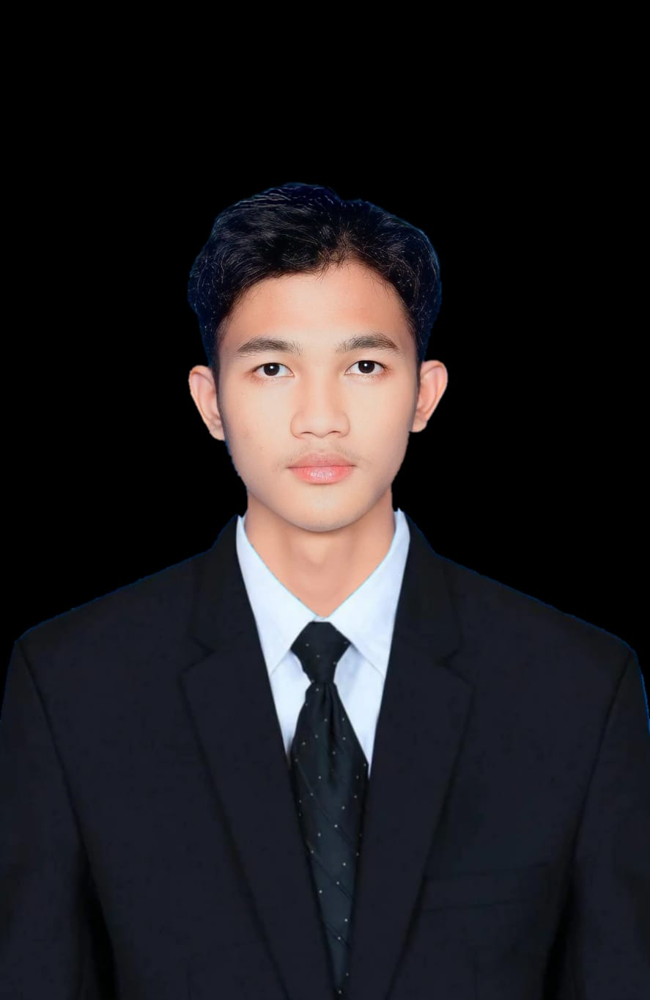

Profil Saya
Afreza Alfianda Rizki Sumantri
Mahasiswa Teknik Komputer yang senang memahami bagaimana sesuatu bekerja, mencoba hal-hal baru, dan mengubah rasa penasaran menjadi sesuatu pemahaman atau keterampilan yang dapat diterapkan.

Sedikit tentang saya
Belajar, mengulik, lalu mencoba.
Saya punya rasa penasaran yang cukup besar terutama terhadap teknologi. Karena itu saya menikmati proses mencoba pemrograman, web, sistem komputer, embedded system, networking, sampai mulai mendalami AI dan machine learning.
Step by step mencoba hal baru.Agar nantinya bisa menghasilkan sesuatu yang bermanfaat.
Buildmengubah ide menjadi sesuatu yang bekerja
Exploremencari tahu hal yang belum saya pahami
Growpelan-pelan membentuk keahlian